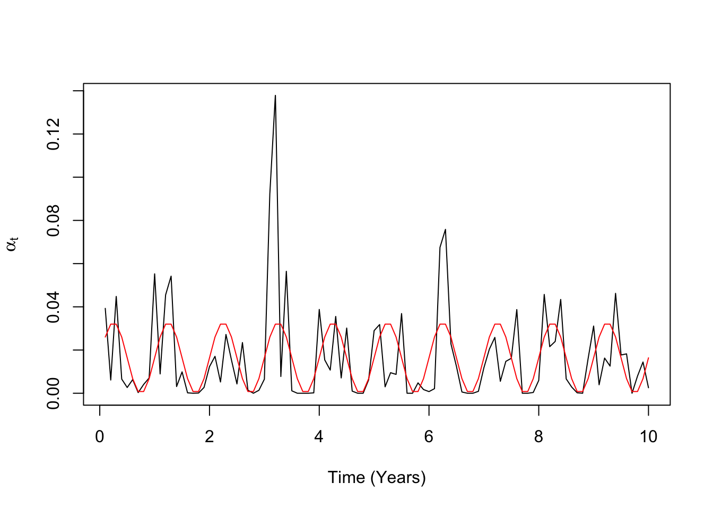
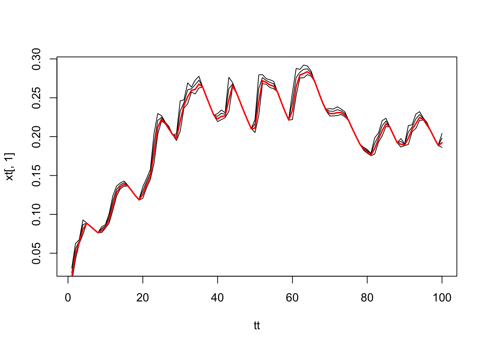

2.1 A Structured Population Tensor Model
Let \(\vec X = \left< u, x, c \right>\) denote a three state model: uninfected and susceptible; infected and infectious; and chemoprotected. Let \(\rho\) denote the fraction of attacks that are treated and let \(q\) denote the fraction that remains infected each time step for infections that are left untreated. Our probability transition matrix is:
\[\begin{equation}{\cal P} (\alpha_t, \rho, q) = \left[ \begin{array}{ccc} 1- \alpha & 1-q - \alpha (1-q) & 1 \\ \alpha (1-\rho) & q + \alpha (1-q) - \alpha \rho& 0 \\ \alpha \rho & \alpha \rho & 0 \\ \end{array}\right] \end{equation}\]Let us further suppose we have sub-populations with distinct treatment rates, \(\rho_1\) and \(\rho_2\). We thus have
\[\begin{equation} \left[ X \right]_t = \left[ \vec X_{1,t}, \vec X_{2,t} \right] = \left[ \begin{array}{cc} u_1 & u_2 \\ x_1 & x_2 \\ c_1 & c_2 \end{array}\right] \end{equation}\]The dynamics here are given by the same recursive relationships as before: we take \[\vec X_{1,t+1} = {\cal P}_{1,t} (\alpha_t, \rho_1, q) \vec X_{1,t}\] and \[\vec X_{2,t+1} = {\cal P}_{2,t} (\alpha_t, \rho_2, q) \vec X_{2,t},\] and \[\left[ X \right]_{t+1} = \left[ \vec X_{1,t+1}, \vec X_{2,t+1} \right].\]
It is worth noting that we can apply operators to \(\left[ X \right]\). For example, \({\cal D} \left[ X \right]\) returns a vector of prevalence values, \(\vec x\), where \(x_i = {\cal D} \vec X_i.\) To get a population average prevalence, we must also supply the weights, \(\vec \omega\), of a population whose elements sum to one, and \[x = \vec \omega ^T \vec x.\]
We would, however, prefer to have a more convenient way of writing down and computing these quantities. Let \(\left[ \cal P \right]\) denote an array that we get from stacking matrices with different values of \(\rho\) – the \(i^{th}\) level is a \(3 \times 3\) matrix \({\cal P}\left(\alpha_t, \rho_i, q \right).\) Let \(\vec \rho = \left[\rho_1, \rho_2 \right],\) so that we can write this stacked matrix as \(\left[{\cal P}(\alpha_t, \vec \rho, q) \right]\), and the recursion relationship is now:
\[\begin{equation} \left[ X \right]_{t+1} = \left[{\cal P}(\alpha_t, \vec \rho, q) \right] \left[ X \right]_t \end{equation}\]where the multiplication implied by juxtaposing these to objects is the elementwise matrix multiplication – the matrix elements of \(\left[{\cal P}\right]\)’s levels working on the elements of \(\left[ X \right]\)’s vectors. As it turns out, these are very natural operations to perform using tensors.
To show how this works, we can fully specify a model. We take \(\vec \alpha\) to be a time series of attack rates, and we run a trace-based simulation, comparing the outcomes for two sub-populations with distinct treatment rates.
t = 1:100*36.5
a = 1; b=60
sint = (1+sin(2*pi*t/365))
alpha = rbeta(100, sint, 60)
plot(t/365, alpha, type = "l", ylab = expression(alpha[t]), xlab = "Time (Years)")
lines(t/365, sint*a/(a+b), type = "l", col = "red")
We can track cohorts of uninfected individuals over time by setting the initial conditions to
X = matrix (c(1,0,0), 3,2)To use the model, we will need to write function that constructs \({\cal P (\alpha, \rho)}\) for each population stratum:
constructP.simple = function(alpha, rho, qq){
calP = matrix(c(
c(1-alpha, 1-qq-alpha*(1-qq), 1),
c(alpha*(1-rho), qq + alpha*(1-qq)-alpha*rho,0),
c(alpha*rho, alpha*rho, 0)), 3,3)
t(calP)
}
constructP = function(alpha, rho, qq=.9){
calP1 = constructP.simple(alpha,rho[1],qq)
dd = dim(calP1)[1]
l = length(rho)
if(length(rho)>1)
calP2 = constructP.simple(alpha,rho[2],qq)
calP = array(c(calP1, calP2), c(dd,dd,l))
if(length(rho)>2)
for(i in 3:length(rho))
calP[,,i] = constructP.simple(alpha, rho[i], qq)
calP
}
calP = constructP(.1, rho = c(0,0.2),.9)Note that we can use tensor-based functions to get the same answers as we would if we used the matrix operations. Here, we do the matrix operations separately and then bind the answers:
cbind(c(calP[,,1] %*% X[,1]), c(calP[,,2] %*% X[,2])) ## [,1] [,2]
## [1,] 0.9 0.90
## [2,] 0.1 0.08
## [3,] 0.0 0.02Here, we use tensors:
tensor(calP, X, alongA = 2, alongB = 1)[,,1]## [,1] [,2]
## [1,] 0.9 0.90
## [2,] 0.1 0.08
## [3,] 0.0 0.02The following looks at changing prevalence in five population strata that all comprise 20% of the population. We plot prevalence over time and the average (red):
rho = 2*c(0, 0.1, 0.2, 0.3, 0.4)
calD = matrix(c(0,1,0), 3, 1)
X = matrix (c(1,0,0), 3,5)
x = t(calD)%*%X
xt = x
dXdt = function(X, alpha, rho, qq=0.95){
calP = constructP(alpha, rho, qq)
tensor(calP, X, alongA = 2, alongB = 1)[,,1]
}
tt = 1:100
for(t in tt){
X = dXdt(X, alpha[t], rho)
x = t(calD)%*%X
xt = rbind(xt,x)
}
xt = xt[-1,]
plot(tt, xt[,1], type = "l")
lines(tt, xt[,2])
lines(tt, xt[,3])
lines(tt, xt[,4])
w = matrix (rep(0.2, 5), 5,1)
lines(tt, xt%*%w, type = "l", col = "red", lwd=2)